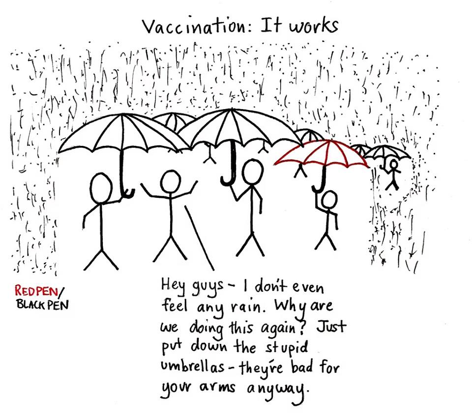

Vaccin
Het woord vaccin is afkomstig van het woord vaccinia, dat zich in het Latijn doet vertalen als koepokken.
De eerste vaccinatie dat werd ontdekt was in 1796 was tegen koepokken. Men kwam erachter dat de vrouwen die de koeien melkten
minder last schenen te hebben of helemaal niet besmet werden door de menselijke variant van de pokken. Het verband werd gauw
gelegd dat door het oplopen van koepokken je de effecten van de pokken ernstig doen verminderen. Door mensen te infecteren
met koepokken waardoor mensen tijdelijk niet ernstige ziekteverschijnselen hadden maar daarna immuun waren tegen de menselijke
variant van de pokken.
Vaccinaties
Vaccineren betekend dat je het lichaam introduceert met een stof ter genezing of voorkoming van een infectieziekte.
Anno 2019 hebben we in Nederland al negen verschillende vaccinaties typen opgenomen in het vaccinatieprogramma.
Door het vaccineren wordt het immuunsysteem van de persoon ondersteunt en worden infectieziekten bestreden door het lichaam.
Vaccinatie is niet alleen belangrijk voor een individu. Ook de totale bevolking is beter beschermd als zoveel mogelijk personen
ingeënt zijn. Dat principe noemt men groepsimmuniteit. Als binnen een bevolkingsgroep bijvoorbeeld 95 procent van de mensen tegen
een bepaalde ziekte gevaccineerd is, zal de ziekte ook bij de overblijvende 5 procent niet meer circuleren. Het percentage mensen
dat gevaccineerd moet zijn om een dergelijke groepsimmuniteit te verkrijgen, verschilt per ziekte. Deze groepsimmuniteit
beschermt ook personen die om medische of andere redenen niet gevaccineerd kunnen of mogen worden, of kinderen die nog te jong
zijn om bepaalde vaccinaties te krijgen.
Skeptisme vaccinaties
Door veelvuldig te vaccineren is het zelfs mogelijk om ziekten uit te roeien. Zo is sinds de jaren 80 de pokken uitgeroeid en
is polio nog maar op enkele plekken te vinden in Nigeria, Pakistan en Afghanistan.
Door bijna iedereen te vaccineren komt een ziekte minder voor en is iedereen beschermd tegen de ziekte. Ook jonge kinderen
die nog niet beschermd worden door vaccinatie en kinderen waarbij de vaccinatie niet goed werkt. Ze zijn dan beschermd door
de immuniteit van de groep. We noemen dit groepsimmuniteit of kudde-immuniteit.
